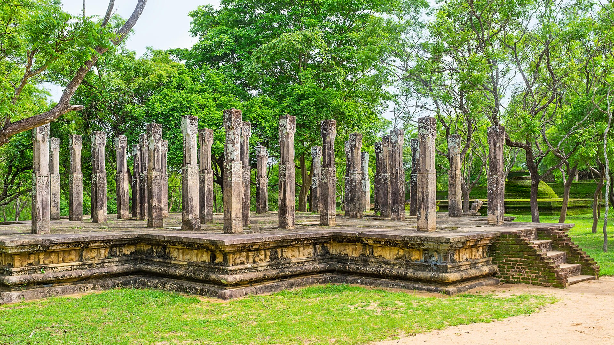

Polonnaruwa is an ancient city in north-central Sri Lanka, known for its well-preserved ruins and UNESCO World Heritage status. Once the thriving second capital of the Kingdom of Sri Lanka, Polonnaruwa flourished between the 11th and 13th centuries under the reign of King Parakramabahu I and his successors. Today, it’s an important archaeological site and a window into Sri Lanka’s rich medieval history.
